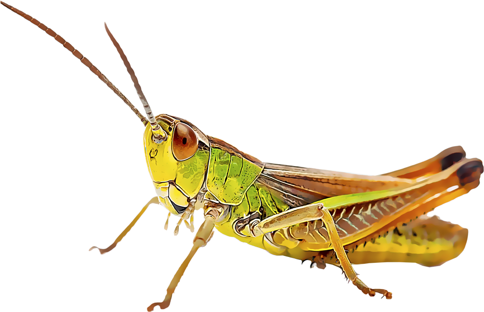

Star Editor
Stars are like bookmarks that you manually add
Use them to launch or focus tabs
Title
URL
Visits:
Last Visit:
Added On:
Remove
Save
Settings
Theme Settings
Icon Settings
Lock Drag
Text Mode
<
>
Font
<
>
Text Size
<
>
Item Order
Default Settings
Theme Settings
Keep clicking for random themes
Dark Theme
Light Theme
Try to detect the browser's theme
Detect Theme
Background Color
Text Color
Background Image
<
>
Default Theme
Icon Settings
This allows you to customize indicators
Set these to any text or emoji
Pin Icon
Playing Icon
Muted Icon
Suspended Icon
Default Icons
GitHub Repo
|
Firefox Store

Copy
Submit